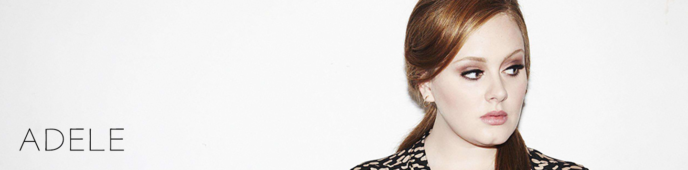

|  |
阿黛尔・阿德金斯（Adele Adkins），1988年5月5日出生于伦敦托特纳姆，英国流行歌手。 2008年，阿黛尔发行了首张专辑《19》，获得当年水星音乐奖提名，并在全球取得了超过900万的销售量。其中的单曲《Chasing Pavements》助其获得格莱美最佳新人和最佳流行女歌手两座大奖。 2011年，阿黛尔推出第二张录音室专辑《21》，拥有三支冠军单曲。该专辑全球销量突破3200万，是21世纪全球销量最高的录音室专辑，被Billboard官网评为史上最伟大的专辑第一位。阿黛尔也在第54届格莱美颁奖典礼中凭借专辑《21》共夺得包括四项通类在内的六项大奖。2013年2月，阿黛尔凭借《Skyfall》获金球奖、奥斯卡奖的最佳原创歌曲奖；12月，她获得大英帝国员佐勋章 。 2015年12月21日发行个人第三张录音室专辑《25》 ，首周分别以80万和338万张的销售量刷新英、美两国专辑首周纪录，该专辑销量已突破2000万张（截止2016年12月初）。专辑首支单曲《Hello》发行在全球100多个国家登顶，其音乐录像带首日观看量突破2300万次，成为Vevo史上首日观看量最高的音乐录影带 。 2017年2月12日，凭借《25》获得第59届格莱美奖包括“年度制作”、“年度专辑”、“年度歌曲”在内的五项大奖 。 2017年全英音乐奖颁奖仪式于2017年2月23日举行，获得全球艺人大奖。
音乐播放中：Hello―Adele
|